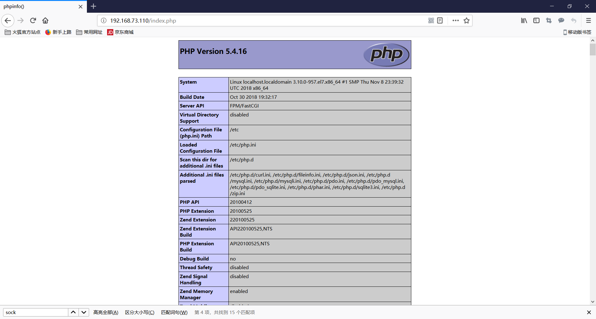

基于UDS的LAMP
本节将演示如何基于UDS(Uninx Domain Socket)来配置LAMP
UDS(Unix Domain Socket)
Unix domain socket 又叫 IPC(inter-process communication 进程间通信) socket，用于实现同一主机上的进程间通信。socket 原本是为网络通讯设计的，但后来在 socket 的框架上发展出一种 IPC 机制，就是 UNIX domain socket。虽然网络 socket 也可用于同一台主机的进程间通讯(通过 loopback 地址 127.0.0.1)，但是 UNIX domain socket 用于 IPC 更有效率：不需要经过网络协议栈，不需要打包拆包、计算校验和、维护序号和应答等，只是将应用层数据从一个进程拷贝到另一个进程。这是因为，IPC 机制本质上是可靠的通讯，而网络协议是为不可靠的通讯设计的。
UNIX domain socket 是全双工的，API 接口语义丰富，相比其它 IPC 机制有明显的优越性，目前已成为使用最广泛的 IPC 机制，比如 X Window 服务器和 GUI 程序之间就是通过 UNIX domain socket 通讯的。
Unix domain socket 是 POSIX 标准中的一个组件，所以不要被名字迷惑，linux 系统也是支持它的。
环境准备
准备2台主机
| 主机 | IP | APP |
|---|---|---|
| A | 192.168.73.110 | http php-fpm |
| B | 192.168.73.111 | mariadb |
安装LAMP
1.在主机A上安装http、php-fpm、php-mysql
1 | [root@localhost ~]# yum install httpd php-fpm php-mysql -y |
2.确保proxy_modules.so和fcgi_mod是启用的
1 | [root@localhost ~]# httpd -M | grep proxy |
3.修改http配置文件
1 | DirectoryIndex index.php index.html |
4.修改php-fpm配置文件
1 | [root@localhost ~]# vim /etc/php-fpm.d/www.conf |
5.启动php-fpm和httpd服务
1 | [root@localhost ~]# systemctl start php-fpm httpd |
6.创建测试页
1 | [root@localhost ~]# mkdir /data/test |
7.测试

8.在B主机上安装MySQL
1 | [root@localhost ~]# yum install mariadb-server -y |
9.启动服务
1 | [root@localhost ~]# systemctl start mariadb-server |
10.创建测试用账号
1 | MariaDB [(none)]> grant all on *.* to test@'192.168.73.110' identified by '111111'; |
11.在http服务器上创建测试页
1 | [root@localhost ~]# vim /data/test/index.php |
本博客所有文章除特别声明外，均采用 CC BY-NC-SA 4.0 许可协议。转载请注明来自 MyLinuxOPS！